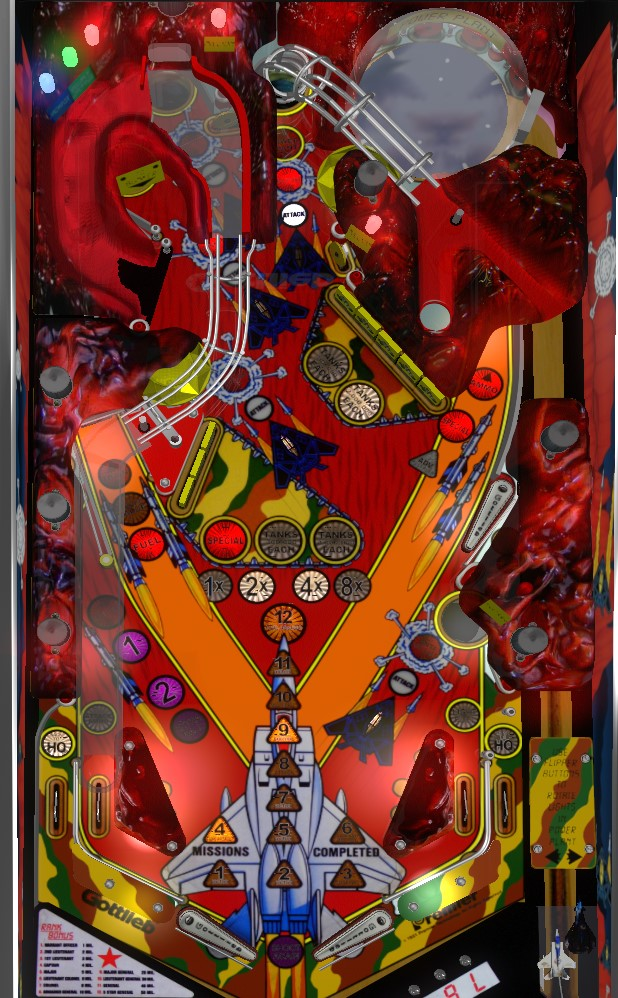

Operation: Thunder is a very linear game where modes called "missions" are played in order. Missions typically boil down to "shoot everything that's flashing". Completing a mission advances your Rank, worth more points at the end of the game; draining during a mission still moves you to the next mission, but does not affect your Rank. Important scoring opportunities are the lit Strafe spinner on the left in Missions 1 and 2, the 20,000,000 bonus for completing mission 6, and the 99,000,000 bonus for completing mission 12. Missions 4, 6, 11, and 12 are timed; shoot the Fuel on the left to earn more time or you're forced to drain.
The sole source of progression on Operation: Thunder is to play through Missions. There are 12 in total. Completing a mission awards a Promotion and automatically starts the next mission. If you drain during a mission, you still move to the next mission for your next ball in play, but you do not get the Promotion or any awards associated with completing that mission. Different Missions light different combinations of playfield features.
If you start a Mission by plunging a ball, different things will happen based on how many lit targets are hit in the Power Plant. The Power Plant is a domed structure in the back right of the playfield featuring a spinning disc, one pop bumper, and six standup targets. The standup targets start lit; hit a lit target to unlight it. Use the flippers to rotate which targets are lit to make it easier to hit all of them in a single trip to the Power Plant.
Mission 1
The Strafe value starts at 100,000 points. Every target hit in the Power Plant adds 100,000 to the Strafe value; hitting all 6 Power Plant targets maxes out the Strafe value at 1,000,000 points.
During Mission 1, the left spinner scores the Strafe value per spin. At up to 1,000,000 points per spin, this is incredibly valuable early in the game.
The lower right saucer is lit for a Thunder mystery award from the start of this mission.
To complete Mission 1, shoot the side ramp, or access the vertical up-kicker in the back left by either shooting it directly or making a full shot to the Train spinner lane on the left. The ball will then be locked for use in Bogie Multiball in Mission 3.
Mission 2
The Attack hurry-up value starts at 3,000,000 points. Every lit target hit in the Power Plant adds 1,000,000 to this value; hitting all 6 Power Plant targets increases the hurry-up value to 9,990,000 points.
The left spinner still scores the Strafe value per spin during Mission 2. There is no way to increase the Strafe value beyond what it reached from Mission 1's Power Plant.
The 5-bank of drop targets are lit for 300,000 points each.
If you drain during Mission 2, the ball locked during Mission 1 is kicked out. If the Attack hurry-up reaches 1,000,000 points, the locked ball is kicked out and Mission 2 is played as a 2-ball multiball. If one of the balls drains before the Mission is completed, the flippers lock and the second ball is forced to drain as well, ending your turn.
To complete Mission 2, shoot the side ramp, or access the vertical up-kicker in the back left by either shooting it directly or making a full shot to the Train spinner lane on the left. The ball will then be locked for use in Bogie Multiball in Mission 3.
Mission 3
Mission 3 is always a multiball. If there are still balls locked above the side ramp from Missions 1 and 2, this will be a 3-ball multiball, and the plunged ball will add to an extra ball timer (starts at 1 second, increases by 1 second at a time, increases to 10 seconds if the Power Plant is completed). If there is not a ball locked above the side ramp, a ball will be plunged and auto-locked scoring 100,000 points per Power Plant target, and a second ball will be plunged that contributes to the extra ball timer; in this case, the mission will be a 2-ball multiball.
The left spinner is no longer lit for Strafe value.
If multiball ends, the mission is failed, and Mission 4 automatically begins.
To complete Mission 3, shoot the 5 shots with flashing bomber planes: the side ramp, the Bunker scoop near the side ramp, the Train upkicker in the back left, the back center saucer, and the Thunder scoop in the lower right. Collecting all 5 shots before single ball play resumes scores an instant extra ball and resets all shots. I do not know what happens if you complete the 5 shots a second time. Mission 4 does not begin until single ball play resumes.
The lower left lane is lit for extra ball for the amount of time earned from the Power Plant (in-game seconds are slightly longer than real seconds, though).
Mission 4
Mission 4 is a timed mode. The alphanumeric display depicts a fuel gauge that decreases over time. If the Fuel gauge runs out, the flippers are locked and the ball is allowed to drain. To earn more Fuel, make the right in lane to light the left spinner for Fuel, then hit the left spinner to restore about 1/4 of the fuel tank. You do not need to hit the spinner immediately after making the right in lane.
Both banks of drop targets are reset at the start of Mission 4, and both banks have their targets lit for 2,000,000 points each. To complete the Mission, you must clear both banks of targets.
Once both banks are cleared, there is no penalty for running out of Fuel. The 3-bank of drop targets will reset itself, and completing the bank again before the Fuel runs out scores an instant Special.
Mission 5 starts automatically in three ways: the ball drains during Mission 4, the Fuel expires after both target banks have been completed, or the Special is collected from the 3-bank of targets.
Mission 5
Mission 5 requires three shots to complete: the Train upkicker in the back left, the Thunder scoop in the lower right, and a full shot to the Ammo vary-target on the right. This is a single-ball, untimed mission.
If the Thunder scoop is not the last shot to be collected, collecting it will light the Thunder mystery award.
During Mission 5, the lone standup targets in the top of the game and near the 5-bank of drop targets are lit for a repeateable 1,000,000 points. They never unlight or time out as long as Mission 5 is running.
During Mission 5, the 3-bank of drop targets is lit for 300,000 points per target. Completing the 3-bank will light the 3-bank for 2,000,000 points per target for the rest of the Mission.
Mission 6
Mission 4 is a timed mode with a Fuel gauge that works identically to the one in Mission 4.
The Train left lane, side ramp, Bunker hole, back center saucer, and lower right Thunder scoop are all flashing. One of these five shots houses the Target, at random. Making the correct shot scores 20,000,000 points and advances to Mission 7.
Mission 7
Mission 7 is an untimed, single-ball mission.
4 shots are required to complete this Mission: the lower left extra ball lane, the lower right Thunder scoop, the back left Train upkicker, and the Bunker hole.
The lower left lane is lit for Extra Ball at the start of this Mission. After a few seconds, the extra ball will revert to the #2 light, and after a few seconds more, the #2 becomes a #1. Hit the target when #1 is lit to light #2; hit the target when #2 is lit to light extra ball; hit the target when extra ball is lit to score the extra ball.
If the Thunder scoop is not the last shot to be collected, collecting it will light the Thunder mystery award.
During Mission 7, the vary-target is always lit to advance the bonus multiplier. In normal gameplay, the vary-target is only lit for a bonus multiplier immediately after the left in lane is made, and hitting any other switch along the way unlights the bonus multiplier chance.
Mission 8
Mission 8 is a hurry-up that immediately begins counting down from 20,000,000 points. It takes just one shot to complete this mode. The lit shot starts at the Bunker hole and moves every 15 seconds: first to the lower right Thunder scoop, then the side ramp, then the back left Train upkicker, then the back center saucer. If the hurry-up timer completey runs out, the flippers are locked and the ball is allowed to drain.
During Mission 5, the lone standup targets in the top of the game and near the 5-bank of drop targets are lit for a repeateable 1,000,000 points. They never unlight or time out as long as Mission 5 is running.
Hitting just one lit shot scores the remaining hurry-up value and advances to Mission 9.
Mission 9
Mission 9 is an untimed, single-ball mode.
5 shots are required to complete Mission 9, and they must be made in order: the lower right Thunder scoop, then the lower left extra ball lane, then the Ammo vary-target on the right, then the Bunker hole, then the top center saucer.
Making the Mission shot at the lower right Thunder scoop lights that scoop for a mystery award.
During Mission 9, the 3-bank of drop targets is lit for 300,000 points per target. Completing the 3-bank will light the 3-bank for 2,000,000 points per target for the rest of the Mission.
Mission 10
Mission 10 is a multiball.
The jackpot value in multiball starts at 3,000,000 points. Each lit target in the Power Plant adds 100,000 points to the jackpot. Unlighting all 6 Power Plant targets adds a further 3,000,000 to the jackpot. If Mission 10 is played multiple times, the jackpot value is built up across all plays, and does not reset.
Mission 10 starts as a 2-ball multiball. If the first ball, which gets kicked to the upper flipper, is shot into the side ramp or the Bunker scoop before the second ball is released, you'll be given the ability to plunge a 3rd ball into play and play Mission 10 as a 3-ball multiball.
The side ramp is lit for unlimited jackpots. Jackpots rotate between single jackpot, double jackpot, and super (triple) jackpot each time one is made.
Mission 10 ends as soon as single ball play resumes, and not before then. Multiple super jackpots can be scored.
Mission 11
Mission 11 is a single-ball mode that uses a Fuel timer similarly to Missions 4 and 6.
Like Mission 9, Mission 11 requires shots in order: the Thunder lower right scoop, then the extra ball lane, then the Bunker hole, then the Train upkicker in the top left, then the top center saucer, then the side ramp. Making all 6 shots moves to Mission 12.
During Mission 11, both banks of drop targets are lit for 300,000 points per target. Completing a will light that bank for 2,000,000 points per target for the rest of the Mission.
Mission 12: Final Battle
Mission 12 is a single-ball mode that uses a Fuel timer similarly to Missions 4, 6, and 11.
Mission 12 wants you to hit all of the Target shots from previous modes in any order: extra ball lane, Train upkicker, side ramp, Bunker, top center saucer, Ammo vary-target, and lower right scoop.
Collecting the lower right Thunder scoop shot does NOT light a Thunder mystery award.
Completing Mission 12 scores 99,000,000 points, instantly elevates your Rank to 5 Star General (the maximum), plays an excessively long sound and light package, immediately prompts you to enter your initials, and returns you to Mission 6.
Various missions lights the lower right Thunder scoop for a mystery award, usually after making the Thunder scoop itself as one of the required shots for that Mission. Awards I've seen from the mystery include:
Operation: Thunder has a conventional in/out lane setup. When lit, the left in lane lights the Ammo vary-target for a bonus multiplier advance, and the right in lane lights the spinner for Fuel. Out lanes score the HQ Bonus, a random big-score award that can be 100,000, 200,000, 500,000, 1,000,000, or 5,000,000 points, and possibly other values as well.
Bonus is equal to 100,000 points per mission finished on the current set, times the bonus multiplier earned from the vary-target. The bonus calculation does not consider completing Mission 12, so if you go back to Mission 6, you lose some base bonus too, but this is okay, because the maximum end of ball bonus is 15x 1,100,000 = 16,500,000 points, which is much less than the 99,000,000 you get for just completing Mission 12 straight up. Bonus multiplier and completed missions count always carry over from ball to ball.